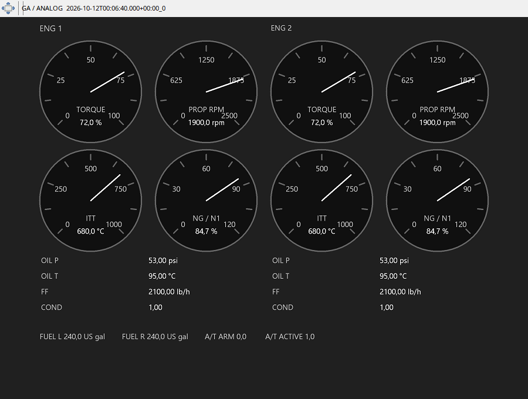

Torque opisuje obci¹¿enie wa³u, prop RPM obroty œmig³a, a Ng/N1 obroty gazogeneratora. To trzy ró¿ne wielkoœci: nie traktuj RPM œmig³a jako N1. ITT pozwala obserwowaæ temperaturê podczas rozruchu i zmian mocy. Obok pozostaj¹ ciœnienie/temperatura oleju i przep³yw paliwa.
Porównuj zmianê torque z ustawieniem condition lever i stanami beta/reverse, o ile je zapisano. Sama ma³a prêdkoœæ lotu nie dowodzi w³¹czenia reverse. Jednostkê odczytaj przy danym wskaŸniku. Zmiana typu panelu w Debug nie przelicza brakuj¹cej telemetrii jet na turboœmig³ow¹.
